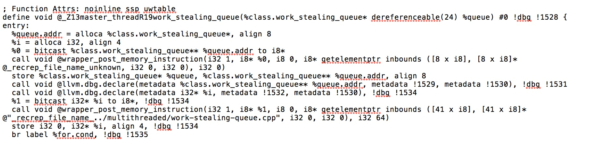

class: center, middle # Verification and Concurrency ### Susanne van den Elsen Native Instruments February 21, 2017 --- # Introduction --- # Why use multiple threads? - Abstraction for modeling concurrent activities - Use multiple CPU cores for speeding up computation <!-- =========================================================================================== --> --- # What's Hard About Concurrency? ### Shared Resources -- count: false ```c++ int x, y, z = 0; thread 0 thread 1 -------- -------- if (x == 1) x = 1; { z = x + y; y = 1; std::cout << z << "\n"; } ``` -- count: false #### Datarace: two (or more) threads access the same memory location *concurrently* and at least one of them is a *write* --- # What's Hard About Concurrency? ### Shared Resources ```c++ array<int,2> nr_meals_eaten = {0, 0}; mutex fork1, fork2; philosopher 0 philosopher 1 ------------- ------------- lock(fork1); lock(fork2); lock(fork2); lock(fork1); ++nr_meals_eaten[0]; ++nr_meals_eaten[1]; unlock(fork2); unlock(fork1); unlock(fork1); unlock(fork2); ``` -- count: false #### Deadlock: One more more threads wait for eachother indefinitely ??? - False sharing: Threads running on different processor cores access different variables located in the same cache line frequently. This will slow down the involved threads due to frequent exchange of cache lines - Lock contention: One thread blocks the progress of other threads by holding a lock too long --- # What's Hard About Concurrency? ### State Space Explosion -- Number of interleavings is *exponential* in the number of threads and instructions! <br/><br/> .center[<img src='./trees/data_races.dot.jpg' width="800"/>] ??? Worst-case example: n threads with 1 local variable each: n! (exponential) interleavings, and only a single outcome --- # What's Hard About Concurrency? ### Nondeterminism The interleaving of threads is out of the programmer's control <br/><br/><br/> .center[<img src='./trees/data_races.dot.jpg' width="800"/>] --- # What's Hard About Concurrency? ### Nondeterminism The interleaving of threads is out of the programmer's control <br/><br/><br/> .center[<img src='./trees/data_races_highlight1.dot.jpg' width="800"/>] --- # What's Hard About Concurrency? ### Nondeterminism The interleaving of threads is out of the programmer's control <br/><br/><br/> .center[<img src='./trees/data_races_highlight2.dot.jpg' width="800"/>] ??? 1. It is in the hands of the OS/VM scheduler - Bugs may only manifest in rare thread interleavings -> But the consequences may be severe in safety-critical systems - Heisenbugs: tend to disappear when you try to debug them -> Hard to reproduce --- # Concurrency Error Detectors ### ThreadSanitzer & Helgrind - Instrument every potentially *visible* instruction - Maintain a state machine for analysis ??? ### ThreadSanitizer - Compiler instrumentation (LLVM IR) ### Helgrind - Runtime Instrumentation (VEX IR, RISC-like) - Code run on synthetic CPU provided by Valgrind Core - Threads are fully serialized (only single CPU is used) | Thread Sanitizer | Helgrind (Valgrind tool) | | :-------------------------------------------------------- | :-------------------------------------------------------- | Only sees errors in actual execution | | | | False positives | | | Possibility to suppress errors | | Only available on 64bit (32bit address space too limited) | | | Compiler Instrumentation | Runtime Instrumentation | | :-------------------------------------------------------- | :-------------------------------------------------------- | | - Need to recompile the source code | + Works directly on the executable | ??? Most devs know Valgrind as a memcheck tool, but that is actually only one of the tools it comes with. A less well-known tool is Helgrind. The nul-tool inserts no instrumentation and causes a 4x slowdown POSIX: - Shared address space among threads. All data (shared and non-shared is identified by its address) - Threads represent a concurrent activity - Synchronisation objects: mutexes, condition variables, semaphores, reader-writer synchronisation objects, barriers, spinlocks --- # ThreadSanitizer & Helgrind: Data Races <!-- Using the *happens-before* relation --> .center[<img src='./trees/data_races[xy]-001111.dot.jpg' height="450"/>] --- # ThreadSanitizer & Helgrind: Data Races Using the *happens-before* relation: .center[<img src='./trees/data_race[xy]-00001111111.dot.jpg' height="450"/>] --- # ThreadSanitizer & Helgrind: Data Races Using the *happens-before* relation: .center[<img src='./trees/data_race[xy-hb]-00001111111.dot.jpg' height="450"/>] --- # ThreadSanitizer & Helgrind: Data Races Limited information in *single* execution: .center[<img src='./trees/data_race_branch.dot.jpg' height="450"/>] --- # ThreadSanitizer & Helgrind: Deadlock .center[ <img src='http://g.gravizo.com/g? digraph deadlock { graph [dpi=300] node [shape=none]; edge [minlen=0.75, arrowsize=0.5] "lock forks[0]" -> "lock forks[1]" [label="thread 1"]; "lock forks[1]" -> "lock forks[0]" [label="thread 2"]; } ' width="450"/>] ??? - Maintains a directed graph of lock aquisitions - A cycle in the graph corresponds to a potential deadlock --- # Systematic Exploration <br/><br/> .center[<img src='./trees/data_races.dot.jpg' width="800"/>] --- # Systematic Exploration ### Taking Control Over the Thread Interleavings - Scheduler - LLVM IR Instumentation Pass -- count: false <br/> .center[] --- # Systematic Exploration ### Simple depth-first exploration State space explosion: becomes infeasible for larger programs --- # State Space Reduction - Explore only a subset of interleavings - Provide coverage guarantees: quantify the class / number of interleavings seen --- # Bounded Search ```cpp bounded_search(program, bound_function, bound) { for (interleaving : program.interleavings()) { if (bound_function(interleaving) <= bound) { explore(interleaving); } } } ``` --- <!-- # Bounded Search --> --- # Bounded Search ### Advantages: - Very fast for low bounds - Quantifiable coverage - Incremental ### Disadvantages: - Incomplete - Redundancy ??? Rendundancy: for high enough bound explores the same as DFS --- # Partial Order Reduction Different interleavings may yield *equivalent* executions: Ideally explore only a single one of those -- count: false ### Dependence Relation ```c++ bool dependent(memory_instr1, memory_instr2) { return same_thread(memory_instr1, memory_instr2) || ( same_operand(memory_instr1, memory_instr2) && memory_instr1.is_write() || memory_inst2.is_write() ); } ``` ### Happens-Before Relation ```c++ bool happens_before(execution, index1, index2) { return index1 < index2 && ( dependent(execution[index1], execution[index2]) || exists index' . index1 < index' < index2 && happens_before(execution, index', index2) ); } ``` ??? HB: transitive-reflexive closure of dependence and execution order --- <!-- # Partial Order Reduction --> .left[<img src='./trees/dpor/jpg/work-stealing-queue-1.jpg' height="600"/>] --- <!-- # Partial Order Reduction --> .left[<img src='./trees/dpor/jpg/work-stealing-queue-1-hb-1.jpg' height="600"/>] --- <!-- # Partial Order Reduction --> .left[<img src='./trees/dpor/jpg/work-stealing-queue-1-hb-1-bt.jpg' height="600"/>] --- <!-- # Partial Order Reduction --> .left[<img src='./trees/dpor/jpg/work-stealing-queue-1-hb-2.jpg' height="600"/>] --- <!-- # Partial Order Reduction --> .left[<img src='./trees/dpor/jpg/work-stealing-queue-1-hb-2-bt.jpg' height="600"/>] --- <!-- # Partial Order Reduction --> .left[<img src='./trees/dpor/jpg/work-stealing-queue-1-hb-3.jpg' height="600"/>] --- <!-- # Partial Order Reduction --> .left[<img src='./trees/dpor/jpg/work-stealing-queue-1-hb-3-bt.jpg' height="600"/>] --- <!-- # Partial Order Reduction --> .left[<img src='./trees/dpor/jpg/work-stealing-queue-2.jpg' height="600"/>] --- <!-- # Partial Order Reduction --> .left[<img src='./trees/dpor/jpg/work-stealing-queue-2-hb-1.jpg' height="600"/>] --- <!-- # Partial Order Reduction --> .left[<img src='./trees/dpor/jpg/work-stealing-queue-2-hb-1-bt.jpg' height="600"/>] --- <!-- # Partial Order Reduction --> .left[<img src='./trees/dpor/jpg/work-stealing-queue-2-hb-2.jpg' height="600"/>] --- <!-- # Partial Order Reduction --> .left[<img src='./trees/dpor/jpg/work-stealing-queue-2-hb-2-bt.jpg' height="600"/>] --- <!-- # Partial Order Reduction --> .left[<img src='./trees/dpor/jpg/work-stealing-queue-2-hb-3.jpg' height="600"/>] --- <!-- # Partial Order Reduction --> .left[<img src='./trees/dpor/jpg/work-stealing-queue-2-hb-3-bt.jpg' height="600"/>] --- <!-- # Partial Order Reduction --> .left[<img src='./trees/dpor/jpg/work-stealing-queue-3.jpg' height="600"/>] --- <!-- # Partial Order Reduction --> .left[<img src='./trees/dpor/jpg/work-stealing-queue-3-hb-1.jpg' height="600"/>] --- <!-- # Partial Order Reduction --> .left[<img src='./trees/dpor/jpg/work-stealing-queue-3-hb-1-bt.jpg' height="600"/>] <!-- --- --> <!-- # Partial Order Reduction --> <!-- .left[<img src='./trees/dpor/jpg/work-stealing-queue-4.jpg' height="600"/>] --> ??? - Equivalence relation on interleavings - Ideally explore exactly one representative per equivalence class + Complete - Non-incremental - For nontrivial programs still too little reduction - Dependence relation on instructions - Happens-before relation on instructions - HB = Partial Order = Equivalence --- # Partial Order Reduction ### Advantages: - Complete coverage ### Disadvantages: - Still infeasible for large state-spaces with many dependencies - Not incremental ??? Rendundancy: for high enough bound explores the same as DFS --- # Thank you! --- # Links POSIX threads: http://pubs.opengroup.org/onlinepubs/000095399/idx/threads.html Helgrind: http://valgrind.org/docs/manual/hg-manual.html DRD: http://valgrind.org/docs/manual/drd-manual.html ThreadSanitizer: https://github.com/google/sanitizers/wiki/ThreadSanitizerDeadlockDetector